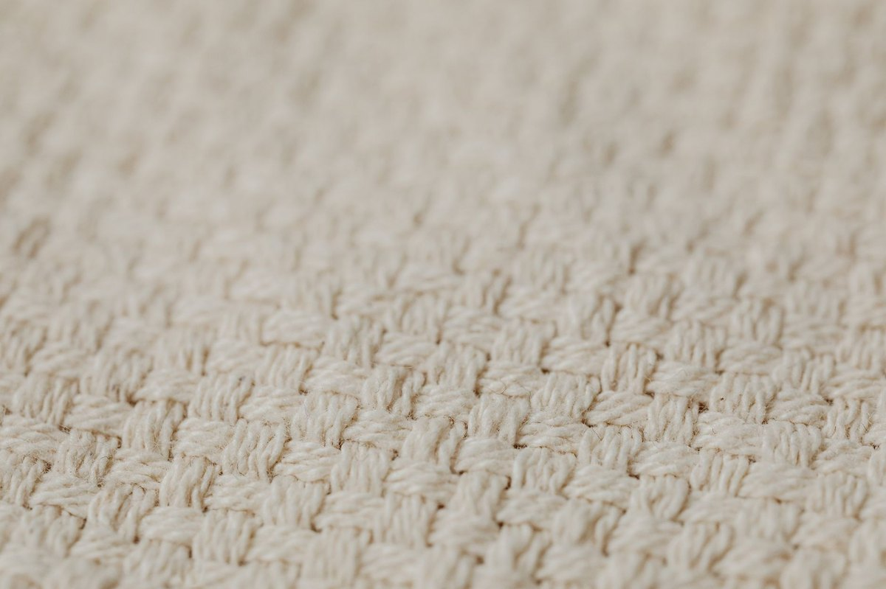

여름이불소재 총정리 — 인견·린넨·모달·냉감원단, 내 조건에 맞게 고르는 법
여름밤 뒤척임의 원인은 단순히 "덥다"가 아니라 체온이 안 내려가는 데 있습니다. 잠들려면 심부체온이 약 1℃ 하강해야 수면 호르몬이 분비되는데(중앙일보 2024), 이불이 열을 가두면 이 하강이 막힙니다. 그래서 소재 선택이 수면의 질을 좌우합니다. 직접 인견·린넨·냉감원단을 번갈아 써보니, 같은 "시원하다"는 표현도 소재마다 체감이 확연히 달랐습니다.

여름이불 소재별 차이 — 인견·린넨·모달·냉감원단, 뭐가 진짜 시원한가
핵심부터 말하면, "시원함"에는 두 가지 종류가 있습니다. 흡습형과 접촉형입니다. 이 차이를 모르면 아무리 비싼 걸 사도 실망합니다.
흡습형 시원함은 땀을 빨아들여 증발하면서 체열을 빼앗는 방식입니다. 인견·린넨·모달이 여기에 해당합니다. 땀을 많이 흘리는 사람에게 효과적입니다.
접촉형 시원함은 피부에 닿는 순간 열전도율 차이로 체열을 이동시키는 방식입니다. 냉감원사·쿨링패드가 여기에 해당합니다. 에어컨을 약하게 틀거나 안 트는 집에서 효과적입니다.
두 방식은 메커니즘이 다르기 때문에, 땀이 많은 사람이 냉감원사를 쓰면 "처음엔 시원한데 자다 보니 등에 땀이 차서 끈적"한 경험을 하게 됩니다. 반대로 에어컨 없는 집에서 인견을 쓰면 "땀은 안 차는데 닿는 느낌 자체가 시원하진 않다"는 결과가 나옵니다.
소재별 핵심 특성은 아래 표로 정리했습니다.
| 소재 | 시원함 원리 | 장점 | 단점 |
|---|---|---|---|
| 인견(레이온) | 흡습 — 면보다 흡습성 뛰어남 | 부드럽고 시원, 가격 합리적 | 세탁 시 수축·구김, 마찰에 약함 |
| 린넨(아마) | 통기성 — 열발산 빠름 | 내구성 강함, 쓸수록 부드러워짐 | 거친 촉감, 비싼 가격, 구김 심함 |
| 모달 | 부드러움 + 흡습 양호 | 피부에 매끄러움 | 인견만큼 시원하진 않음 |
| 텐셀(라이오셀) | 흡습·발산 밸런스 | 친환경(용매 회수율 99% 이상), 부드러움 | 가격대 높음 |
| 냉감원사(쿨링) | 접촉 냉감 — 열전도율 높음 | 에어컨 없이도 체감 시원, 세탁 편함 | 수분 흡수 안 됨, 땀 많으면 끈적 |
| 순면(고밀도) | 무난한 통기성 | 세탁 쉽고 내구성 좋음 | 시원함 약함, 두꺼우면 답답 |
인견의 흡습성이 "면의 1.5배"라는 수치는 다수 블로그에서 언급되지만 공식 1차 출처로 확인되지 않았습니다. "면보다 흡습성이 뛰어나다"는 점은 확실합니다. 텐셀=라이오셀의 용매 회수율 99% 이상은 Lenzing사 공식 자료에 기반한 값입니다(Lenzing 공식 기반, 블로그 인용).
여기서 주목할 점은 냉감원사의 시원함을 객관적으로 나타내는 지표가 있다는 것입니다. 접촉 냉감 지수(Q-max)라는 값으로, 높을수록 피부에 닿았을 때 체열 이동 속도가 빠릅니다(이브자리 수면환경연구소 2026-06-11). 다만 Q-max의 구체적 기준치(예: 몇 이상이어야 "냉감"으로 인정하는지)는 한국소비자원·KS 규격으로 추정되나, 공식 원문 확인이 필요해 이 글에서는 단정하지 않습니다.

내 조건에 맞는 소재 고르기 — 땀·에어컨·피부·세탁 4축 매트릭스
대부분의 여름이불 글이 "땀 많으면 인견" 식의 1:1 매칭으로 끝납니다. 하지만 현실에서는 땀·에어컨·피부·세탁 네 가지 조건이 동시에 작동합니다. 예를 들어 땀이 많은데 에어컨도 안 틀고 세탁도 귀찮다면? 단일 추천으로는 답이 안 나옵니다.
이 글에서는 네 축을 동시에 고려하는 매트릭스를 만들었습니다.
| 우선 조건 | 1순위 소재 | 이유 |
|---|---|---|
| 땀을 많이 흘린다 | 인견, 린넨 | 흡습력 최우선, 땀을 빨아 증발시켜 체열 하강 |
| 에어컨을 안 틀거나 약하게 튼다 | 냉감원사 | 접촉 냉감이 체감 온도를 직접 낮춤 |
| 피부가 예민하다 / 아토피 | 고밀도 순면, 모달 | 부드러운 촉감, 알레르기 유발 적음 |
| 세탁기를 자주 돌린다 | 냉감원사, 순면 | 수축 걱정 없고 관리 편리 |
| 가성비가 최우선 | 인견, 순면 | 가격대가 낮고 접근성 좋음 |
직접 3년여 인견 이불을 쓰면서 체감한 점은, 흡습력은 확실히 좋지만 세탁 후 수축과 구김이 매번 신경 쓰인다는 것입니다. 세탁망 사용하고 찌그러진 건 펴서 말리는 수고가 필요합니다. 인견의 장단점을 같이 말씀드리는 이유가 여기에 있습니다.
한 가지 더, 피부가 예민한 분에게 원단의 "수(數)"가 중요합니다. 수가 높을수록 실이 가늘고 촘촘하게 짜여 부드럽고 얇아집니다. 여름용으로는 300~400수처럼 높은 수가 통기성과 피부감 모두에 유리합니다(일반 섬유 지식, 엘르홈 침구 기초지식표). 모달 300~400수 원단은 실이 촘촘해 알레르기 유발 성분 차단에도 도움이 됩니다.
소재 잘못 고르면 생기는 문제 — 심부체온 하강·수면의 질·피부트러블
이브자리 수면환경연구소(2026-06-11)가 제시한 수면 적정 환경은 실내온도 약 24℃, 습도 40~60%입니다. 침실 온도가 24~26℃를 넘기면 심박수가 상승해 심장에 스트레스가 가중된다고 합니다(매일경제 2024).
잠들 때 심부체온이 약 1℃ 하강해야 멜라토닌이 분비되어 자연스러운 수면이 시작됩니다(중앙일보 2024). 그런데 통기성 없는 두꺼운 합성섬유 이불을 덮으면 체열이 갇혀 체온 하강이 막힙니다. 결과는 잠들기 어렵고, 자다 깨기를 반복하며, 땀이 축적되어 다음 날 피로감과 집중력 저하로 이어집니다(국민건강보험공단 건강iN, 대한수연학회 수면위생지침 인용).
소재 선택을 잘못했을 때 나타나는 문제를 정리하면 아래 흐름과 같습니다.
통기성 없는 두꺼운 합성섬유 이불
↓
체열 갇힘 → 체온 하강 안 됨
↓
잠들기 어려움 · 자다 깨어남 · 땀 축적
↓
수면의 질 저하 → 다음 날 피로·집중력·면역력 하락
추가로 여름철 땀이 많은 상태로 흡습성 낮은 소재를 쓰면, 땀이 마르지 않아 피부 트러블이나 땀 냄새가 생길 수 있습니다. 땀이 많은 분이 냉감원사만 믿고 덮었다가 "등에 땀이 고여서 깨는" 경우가 대표적인 사례입니다.
2026년 열대야 첫 발생이 전년 대비 19일 빨라졌다는 보도도 있습니다(lawissue 2026-06-11). 여름이불 소재 선택이 그만큼 더 일찍, 더 중요해진 셈입니다.
참고로 2026년 총 열대야 일수 예측치는 기상청 직접 확인이 필요해 이 글에서는 다루지 않습니다.
실제로 비교할 때 체크리스트 — 수·조직·가격·세탁·내구성
소재만 보고 고르면 안 됩니다. 같은 "순면"이라고 써 있어도 원단을 어떻게 짰느냐에 따라 촉감과 통기성이 다릅니다. 구매 전 아래 항목을 확인하세요.
1. 원단의 수(數) 확인하기
라벨에 적힌 "수"는 원단의 조밀도를 뜻합니다.
| 수(數) | 특징 | 여름 적합도 |
|---|---|---|
| 낮은 수 (예: 60수) | 실이 굵고 단단, 내구성 좋음 | 통기성 약간 낮음 |
| 높은 수 (예: 300~400수) | 실이 가늘고 촘촘, 부드럽고 얇음 | 통기성·피부감 모두 유리 |
여름에는 높은 수가 시원함에 유리합니다.
2. 조직(직조 방식) 확인하기
| 조직 | 특징 | 비고 |
|---|---|---|
| 사틴(새틴) | 매끄럽고 광택 | 피부감 좋음, 다소 약함 |
| 트윌 | 부드럽고 치밀, 세탁 후 변형 적음 | 침구용으로 가장 다용 |
| 평직 | 튼튼하지만 구김·광택 덜함 | 내구성 우선 시 |
일반 섬유 지식 기반이며, 엘르홈 침구 기초지식표와 일치합니다.
3. 가격·세탁·내구성 종합 비교표
| 소재 | 가격대 | 세탁 난이도 | 내구성 |
|---|---|---|---|
| 인견 | 중저가 | 높음(수축·구김 주의) | 중 |
| 린넨 | 고가 | 낮음(잘 빨고 잘 마름) | 최강 |
| 모달 | 중가 | 낮음 | 중 |
| 텐셀 | 중고가 | 낮음 | 양호 |
| 냉감원사 | 중저가 | 낮음(세탁기 OK) | 양호 |
| 순면 | 중저가 | 낮음 | 강 |
직접 인견 이불을 세탁하면서 느낀 건, 세탁망에 넣고 약하게 돌려도 건조 후 약간 수축이 온다는 점이었습니다. 인견을 사신다면 세탁 시 수축을 감안해 한 치수 여유를 두거나, 세탁 귀찮음이 크다면 냉감원사·순면 쪽이 관리 면에서 수월합니다.
4. 최종 선택 가이드 — 한 줄 요약
- 땀 많고 가성비 원하면 → 인견 (단, 세탁 수축 감수)
- 한 번 사서 오래 쓸 투자감 → 린넨 (단, 거친 촉감·고가)
- 피부 예민하고 부드러움 원하면 → 모달·고밀도 순면
- 에어컨 안 틀고 접촉 시원함 원하면 → 냉감원사 (단, 땀 많으면 비추천)
- 친환경 + 고급스러움 → 텐셀 (단, 가격대 높음)
이웃집 블로거가 추천하는 "무조건 이게 1위"라는 식의 단일 정답은 없습니다. 내가 땀을 많이 흘리는지, 에어컨을 틀고 자는지, 세탁을 자주 하는지, 피부가 예민한지 — 이 네 가지를 먼저 점검하시면 이 표에서 바로 답이 나옵니다.
이 글에 사용된 소재별 열전도율(W/m·K) 정확값이나 대자리·모시 등 전통 소재의 공식 규격은 공식 1차 출처로 확인되지 않아 다루지 않았습니다. 필요시 한국섬유공업협회·KS 규격 원문을 추가로 확인하시길 권합니다.